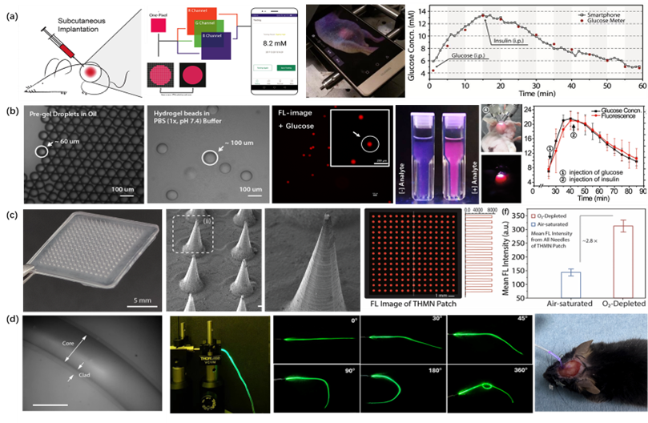

研究背景与意义
1.非侵入式脑接口
非侵入式脑机接口因其安全性高、使用便捷、应用场景广泛而备受关注。然而，由于传统 EEG 电极存在灵敏度不足、易干燥、舒适性差及难以长期复用等限制，高性能非侵入式 EEG 电极的开发仍面临显著挑战。针对上述问题，课题组通过高分子单体、离子缓冲液及壳聚糖的协同调控，构建了具备优异抗菌性能的半干式水凝胶 EEG 传感器，实现了长期、稳定且可重复的脑电信号采集。在事件相关电位（ERP）实验中，该水凝胶电极成功捕获清晰的 ERP 波形，获得 20.02 dB 的信噪比，已与传统湿电极相当（Microsyst. Nanoeng. 2023, 9:79）。在持续佩戴测试中，电极与头皮的接触阻抗在 12 小时内始终低于 100 kΩ，而传统湿电极由于脱水在 7–8 小时后无法继续获得有效信号，充分证明该水凝胶电极的长期稳定性。此外，通过引入壳聚糖，电极表现出优异的抗菌功能，可显著抑制革兰氏阴性菌与阳性菌的生长，有效降低长期复用过程中的细菌感染风险（Microsyst. Nanoeng. 2025, 11:105）。该成果为非侵入式可穿戴脑机接口的大规模应用提供了关键材料基础。目前，相关技术正向运动想象识别、驾驶/作业疲劳监测、脑认知康复训练等应用场景加速转化落地。
2.多模态人机交互传感
面向未来人机融合的理想图景，围绕着“可穿戴/植入柔性光电子学传感器及生物医学应用”开展工作，构建集成电学、光学等多模态生物传感架构、开发多类型柔性传感植入体（水凝胶微球、微针、纤维、贴片），调控信号/材料/组织微观界面结构与特性，进行在体原位高信号质量、高信道数量、高时空精度、多生理参数的“采集-解码-调控”，以期实现人机感知与交互（ACS Nano, 2016, 10, 6769，ACS Nano, 2018, 12,5176）。
核心方法与技术
- {{核心技术或方法一}}
- {{核心技术或方法二}}
- {{核心技术或方法三}}
图1. 水凝胶电极的设计与表征。（A）基底-黏附双层水凝胶材料的设计；（B）N170 测试的实验流程图；（C）使用水凝胶电极测试脑电信号和使用湿电极的对比;（D）抑制大肠杆菌和表皮葡萄球菌的作用效果;（E）抑菌导电水凝胶电极的生物安全性表征结果;（F）连续21 天重复使用同一水凝胶电极采集 N170 波。
图2. “多模采集-分析解码-精准调控”人机交互系统。（a）植入式纳米荧光探针以及体外智能终端平台（如智能手机终端该增配平台、自行搭建小型可穿戴平台等），用于组织微环境（ISF）生物标志如的实时监测与病程追踪；（b）微创注射式微凝胶（微球）传感植入体，用于肿瘤微环境（TME）异常代谢的实时监测与干预治疗；（c）半侵入式凝胶微针阵列传感植入体，用于创面组织微环境的实时监测与愈合评估；（d）植入式水凝胶纤维传感植入体，用于深脑局部脑电波动、代谢波动的实时感知与光/电调控。
近期重要进展
{{列举1-3项最重要进展，可包含数据或关键发现...}}
未来目标
{{未来1-2年的研究计划和发展目标...}}